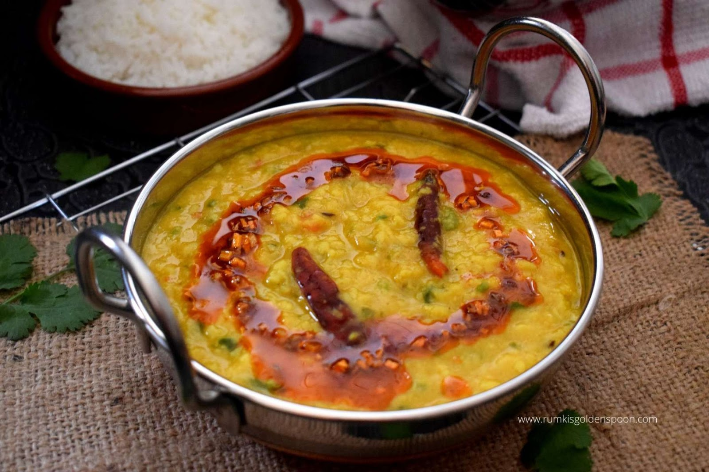

Dal Tadka

Dal Tadka is a popular Indian lentil dish made with arhar dal (husked & split pigeon pea lentils) or masoor dal (husked & split red lentils).
Ingredients
- 1 Cup Toor Dal (Washed)
- 1 Cup Masoor Dal (Washed)
- 2 Onions
- 5-6 Green Chillies
- 2 Spoon Vegetable Masala
- Salt According to taste.
Steps
- Rinse 1 cup tuvar dal or arhar dal (split & husked pigeon pea lentils) for a couple of times in water. Add them to a 3 litre pressure cooker.
- Add ½ cup chopped onions, 1 cup finely chopped tomatoes, 1 or 2 green chilies
- . Pour 2.5 cups of water. If cooking in a pot, then about 4 to 4.5 cups of water can be added.
- Add ½ turmeric powder and 1 pinch of asafoetida (hing). If you do not have asafoetida, then skip it.
- Mix well.
- Pressure cook the lentils for about 7 to 8 whistles or more till they become soft and creamy. Mash the cooked lentils with a wired whisk or with a spoon and keep aside.